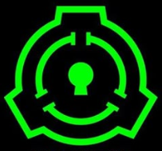
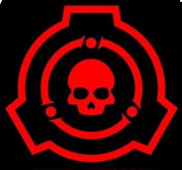
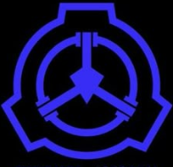
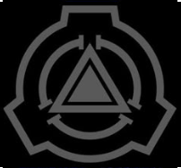

Los niveles de contención de los SCP se utilizan para clasificar los objetos, entidades y fenómenos de la Fundación SCP según su grado de peligrosidad y dificultad para ser contenidos. Los niveles más comunes son los siguientes:
Son aquellos que pueden ser contenidos sin mayores dificultades. Su comportamiento es predecible y no representan una amenaza significativa si se mantienen bajo las condiciones adecuadas de contención. Sin embargo, su seguridad aún es vigilada.

Son entidades cuyo comportamiento es menos predecible que los de clase Safe. Puede que no sean completamente peligrosos, pero su contención es más difícil y requiere de más medidas para evitar su fuga o manipulación indebida.
Son entidades extremadamente peligrosas y difíciles de contener. Requieren medidas de contención avanzadas y, a menudo, se asocian con eventos catastróficos si no se mantienen bajo control. Los SCP Keter pueden ser letales o causar graves consecuencias si se escapan o son liberados.

Son objetos, entidades o fenómenos que, en lugar de ser peligrosos, son útiles para la Fundación SCP en sus esfuerzos para contener otros SCP. Se utilizan como recursos valiosos para garantizar la seguridad de la humanidad.

Este término se refiere a SCPs que ya no representan una amenaza activa, ya sea porque han sido destruidos, neutralizados o porque su contención ya no es necesaria.
